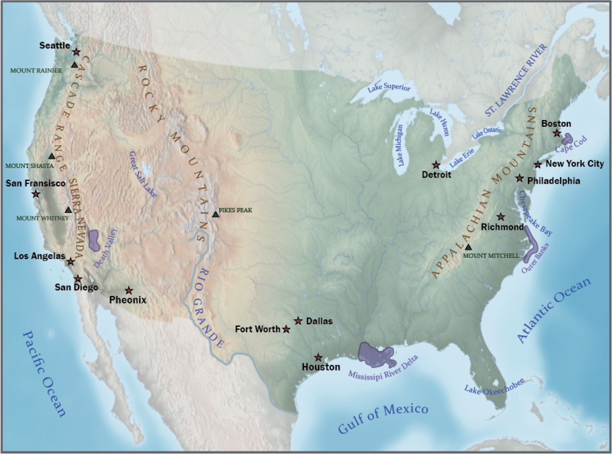

01 / 06
Map Title One
This map explores [describe what the map shows]. The composition uses [describe the visual approach, data, or cartographic technique] to communicate [main geographic idea or finding].
ArcGIS Pro · 2026
Catalogue
A collection of cartographic work exploring the intersection of geography, design, and visual communication. These maps emphasize thoughtful composition, symbology, typography, and visual hierarchy to communicate geographic information clearly and effectively.